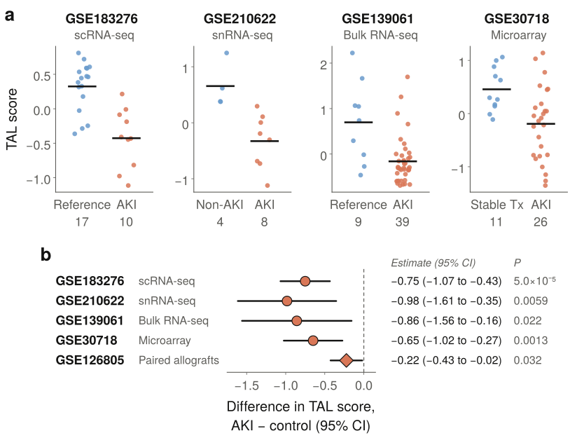
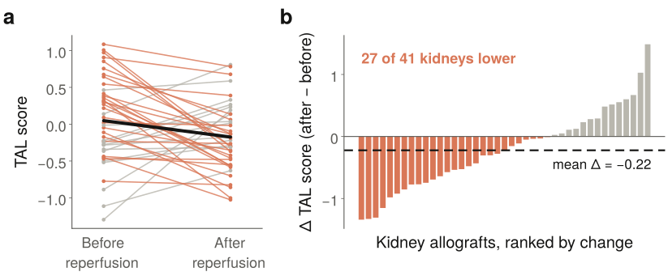
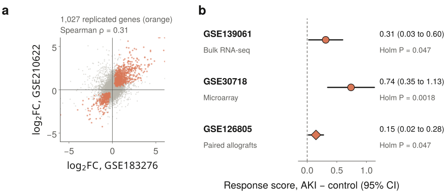
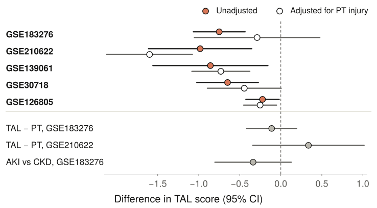

- A six-gene TAL transport programme, fixed before analysis, was lower in AKI in five of five cohorts.
- The score fell within the same kidney after transplant reperfusion (27 of 41 grafts).
- A broader TAL-derived response replicated in tissue; TAL selectivity and AKI specificity remain open questions.
01Introduction
The TAL reabsorbs roughly a quarter of filtered sodium chloride, builds the medullary concentration gradient and is the main source of uromodulin. Human single-cell atlases describe injured epithelial states along the nephron1,2, but differences between cells cannot show whether a segment-level change holds across patients and cohorts. We therefore asked one narrow question: is a fixed TAL transport programme lower in AKI wherever it can be measured?
02Methods
| Cohort | Data | Comparison | Unit |
|---|---|---|---|
| GSE1832761 | scRNA-seq | 10 AKI vs 17 reference | donor |
| GSE2106222 | snRNA-seq | 8 AKI vs 4 non-AKI | donor |
| GSE1390613 | Bulk RNA-seq | 39 AKI vs 9 reference | sample |
| GSE307184 | Microarray | 26 transplant AKI vs 11 stable | donor |
| GSE1268055 | Bulk RNA-seq | 41 grafts, before vs after reperfusion | kidney |
Score. Within each cohort, log2(CPM+1) values of the six genes were z-scored per gene and averaged. In the cell-resolved cohorts, authors’ TAL annotations were summed per donor (pseudobulk; donors with ≥50 TAL cells).
Statistics. t-tests matched to each design, checked by permutation and leave-one-donor-out re-estimation. Gene-level models used edgeR quasi-likelihood; genes at FDR < 0.05 in the same direction in both cell-resolved cohorts formed a signed response score.
04Discussion
Across single-cell, single-nucleus, bulk RNA-seq, microarray and paired transplant data, a fixed TAL transport programme was lower in AKI each time it was measured. Because the score was defined in advance and tested with the donor, sample or kidney as the unit, the result does not rest on cell-level pseudoreplication or on tuning to one dataset, and the gene-level extension places the six genes inside a larger, reproducible TAL response.
The TAL score moves with PT and other tubular identity programmes, so these data describe coordinated tubular remodelling in which the TAL takes part. Limitations: small control groups, post-mortem AKI sampling in GSE210622 and bulk tissue in three cohorts. Spatial and protein-level studies in matched biopsies with linked clinical data can now test where and why the programme falls.
03Results
Lower in AKI across four cross-sectional cohorts
The TAL score was lower in AKI in both cell-resolved cohorts and both tissue cohorts (Fig. 1). Leaving out any single donor never changed the sign of the estimate. In GSE210622 all AKI samples were post-mortem and three of four controls were nephrectomies, so this cohort confirms the direction but cannot separate AKI from tissue source.

Lower within the same kidney after reperfusion
In 41 transplanted kidneys biopsied before and after reperfusion, the score fell by a mean of 0.22 (95% CI 0.02 to 0.43; paired t-test P = 0.032), and 27 grafts declined (Fig. 2). Each kidney serves as its own control, so between-donor differences do not enter this comparison.

03Results, continued
A broader TAL response replicates in tissue
Across 10,064 genes tested in both cell-resolved cohorts, AKI effects were correlated (Spearman ρ = 0.31), and 1,027 genes changed in the same direction at FDR < 0.05 in each. A signed score built from these genes was higher in AKI in all three tissue cohorts, including after removing genes shared with the six-gene programme (Fig. 3). No single pathway replicated across cohorts.

How specific is the change?
Adjusting for proximal tubule (PT) injury left the effect negative in GSE210622, GSE139061 and the paired allografts, borderline in GSE30718, and removed it in GSE183276, where AKI and PT injury were almost collinear (r = 0.91). The TAL score did not fall more than a PT identity score, and AKI did not differ clearly from CKD (P = 0.15; Fig. 4).
